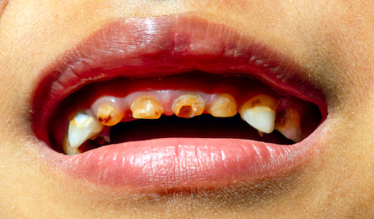
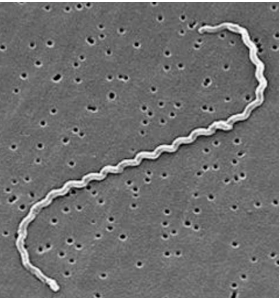
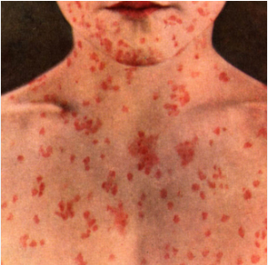
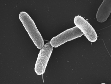
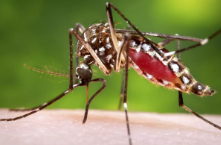
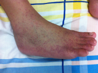

A higiene com o saneamento de qualidade é essencial, pois ao se lavar as roupas em locais adequados, tomar banho, escovar os dentes, preparar alimentos com água tratada, limpar o imóvel e entre outras maneiras, afastam a população da contaminação por fungos como frieras, potiríase versicolor, bactérias como Staphylococcus, Streptococcus, diarreia, cólera, febre tifoide, leptospirose, hepatite A, de problemas bucais como cáries, gengivite e do até mais grave, a infecção do sangue e orgãos.
O acumulo de água parada de vazamentos e esgoto podem criar excelentes criadouros de Aedes aegypti que podem levar as habitantes doenças como dengue, zika, chikungunya e febre amarela urbana.

A falta de uma adequada saúde bucal devido a falta de sanemento pode ocasionar a cárie, onde a presença de alimentos e açucares acumulados nos dentes podem fazer com que bactérias ao comerem esses restos de alimentos danifiquem os dentes, levando a pessoa a uma péssima alimentação, doenças do sangue ou até mesmo problemas mais graves com orgãos.

O uso de água mal tratada, consumo de alimentos mal lavados ou o contato com água contamina de esgoto podem trazer a pessoa a contaminação pela leptospirose, a qual traz ao indivíduo febre, dor de cabeça, sangramento, dor muscular, olhos vermelhos, vômitos, calafrios, diarreia, náuseas, irritação na pele e em casos mais graves a morte


A febre tifoide pode ocasionar febre alta, dor de cabeça, dor de barriga, diarreia, perda de apetite, hemorragia interna, irritação com pontos avermelhados na pele, perda de peso e em casos mais graves a morte


O mosquito da dengue que tem seu nome de Aedes aegypti pode transmitir 4 doenças para os cidadãos como chikungunya, dengue, febre amarela urbana e zika vírus. As imagens acima ofertam a oportunidade de observar as manchas causadas pela chikungunya, além que outros sintomas que ela pode apresentar como dor de cabeça, febre alta, calafrios, dor atrás dos olhos, dores musculares, vômitos, náuseas e em casos mais graves a morte